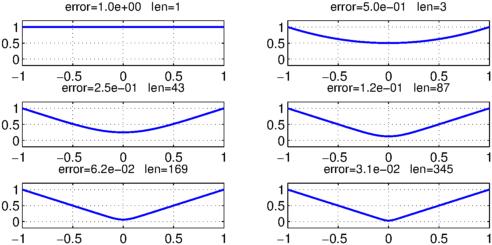
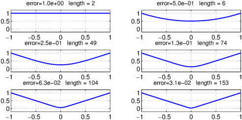
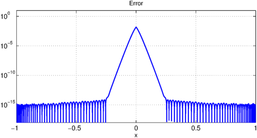
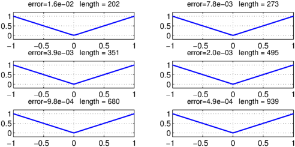
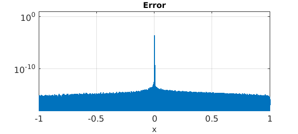

Peter Lax mentioned to me recently an example that no doubt various people have thought about over the years. Suppose we think of $x^2$ as a given number and we try to find its square root by solving the equation
$$ r^2 = x^2 $$
for $r$ using Newton's method beginning from the guess $r=1$. The successive iterates are given by the formula
$$ r := (r^2+x^2)/2r . $$
After $k$ steps we have a rational function of type $(2^k,2^k)$, and these functions will approach the function $|x|$.
Let's see the iteration in action:
x = chebfun('x');
r = chebfun('1');
LW = 'linewidth'; lw = 1.6; FS = 'fontsize'; fs = 12;
for k = 0:5
subplot(3,2,k+1)
plot(r,LW,lw), axis([-1 1 -.2 1.2]), grid on
err = norm(r-abs(x),inf);
s = sprintf('error=%4.1e len=%d',err,length(r));
title(s,FS,fs)
r = (r.^2+x.^2)./(2*r);
end

The curves look nice, but the exponentially growing chebfun lengths do not. To improve this, we can put a breakpoint at $x=0$:
x = chebfun('x',[-1 0 1]);
r = chebfun('1',[-1 0 1]);
for k = 0:5
subplot(3,2,k+1)
plot(r,LW,lw), axis([-1 1 -.2 1.2]), grid on
err = norm(r-abs(x),inf);
s = sprintf('error=%4.1e length = %d',err,length(r));
title(s,FS,fs)
r = (r.^2+x.^2)./(2*r);
end

It's interesting to look at the error. In the outer half of the interval, we've already achieved machine precision, whereas near $x=0$ the errors remain large.
clf, semilogy(abs(r-abs(x)),LW,lw)
axis([-1 1 1e-18 10]), grid on
xlabel('x',FS,fs)
title('Error',FS,fs)
Warning: Negative data ignored

Let's take six more steps of the iteration:
for k = 0:5
subplot(3,2,k+1)
plot(r,LW,lw), axis([-1 1 -.2 1.2]), grid on
err = norm(r-abs(x),inf);
s = sprintf('error=%4.1e length = %d',err,length(r));
title(s,FS,fs)
r = (r.^2+x.^2)./(2*r);
end

Here is the error:
clf, semilogy(abs(r-abs(x)),LW,lw)
axis([-1 1 1e-18 10]), grid on
xlabel('x',FS,fs)
title('Error',FS,fs)
Warning: Negative data ignored

Evidently we are getting convergence to $|x|$, for all $x$. In the $\infty$-norm, the rate looks pretty disappointing. Donald Newman showed that the optimal type $(n,n)$ rational approximants to $|x|$ achieve accuracy $O(\exp(-C \sqrt n))$ [1,2], whereas here the maximum error is exactly $2^{-k}$ after $k$ steps, which corresponds to $1/n$ for the type $(n,n)$ approximation. Away from $x=0$, however, the accuracy is $O(\exp(-Cn))$, thanks to the quadratic convergence of Newton's method.
Incidentally, note that this last curve is not very close to symmetrical about $x=0$. I wonder why not?
References
-
D. J. Newman, Rational approximation of $|x|$, Michigan Mathematical Journal, 11 (1964), 11-14.
-
L. N. Trefethen, Approximation Theory and Approximation Practice, SIAM, 2013.